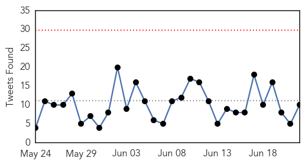
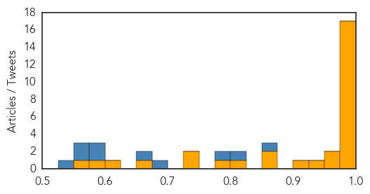
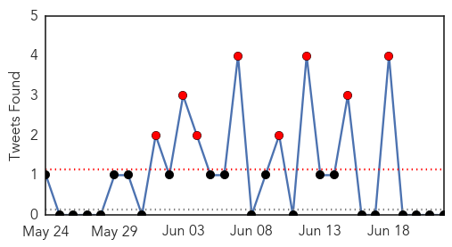
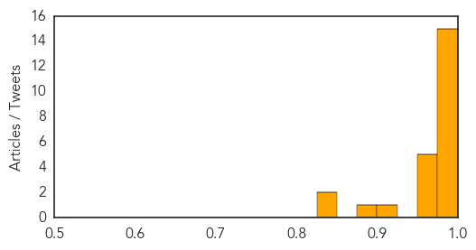

Ebola
30-Day Web Trend
0 alerts, 0 warnings

30-Day Twitter Trend
0 alerts, 0 warnings

Article Locations

Article Confidences
Top Articles:
- 1.000
- Feature: Kenyan doctors help fellow Africans in Ebola-hit West Africa
- 1.000
- The most from the coast
- 1.000
- Feature: Kenyan doctors help fellow Africans in Ebola-hit West Africa
- 1.000
- Health & Wellbeing
- 1.000
- Feature: Kenyan doctors help fellow Africans in Ebola-hit West Africa - Xinhua
- 1.000
- Ebola Doesn’t Disappear at Zero and Neither Will We
- 0.998
- 'Fighting Ebola showed Africans can work well together'
- 0.998
- Modern Healthcare Modern Healthcare business news, research, data and events
- 0.998
- Study of Ebola survivors opens in Liberia
- 0.997
- Gov’t Issues Travel Alert for Sierra Leone and Guinea
- 0.996
- Ebola returns to Sierra Leone capital after three-week gap By Reuters
- 0.996
- Sequencing Ebola’s Secrets
- 0.993
- Guinea, Sierra Leone Still Have Ebola
- 0.989
- North Korea Developes Vaccine To Cure AIDS
- 0.986
- Are Indian Doctors in Nigeria Being Forced to Treat Ebola Patients?
- 0.985
- Did the Ancient Greeks Get Ebola?
- 0.978
- St. Louis-area doctor who helped fight Ebola is finalist for student loan forgiveness
- 0.963
- North Korea Claims It Has Cure for MERS, Ebola and AIDS
- 0.956
- One of Sierra Leone's toughest slums beats Ebola
- 0.939
- MERS Cure Found by North Korea?
- 0.907
- Border Town Chiefs Receive Cell-Phones against Ebola
- 0.861
- Govt plays down MERS impact
- 0.856
- Global Health Means Health At Home Too
- 0.814
- Orchestrated Scientific Collaboration: Critical to the Control of MERS-CoVScientific Collaboration to Control MERS-CoV
- 0.782
- Médecins Sans Frontières Awarded Prize
- 0.732
- The Hot Zone: This Little Fly Can Inflict Some Serious Pain
- 0.727
- MOHS Poised to Provide Clean, Safe and healthy Environment in all Hospitals
- 0.670
- What Does the Future Hold for Tekmira’s Ebola Program?
- 0.605
- FG monitoring MERS spread in Middle East —NCAA boss
- 0.575
- Sierra Leone: IOM Sierra Leone Ebola Response Situation Report Issue 29
- 0.555
- How reliable data can secure a healthy future
Top Tweets:
- 0.943
- RT: Listen to De Capua report on Ebola Update: The Ebola outbreak in West Africa is still not over.... http://t.co/hdazi3Sbp6 Eb…
- 0.937
- Ebola Returns to Sierra Leone Capital After Weeks of No New Cases - TIME http://t.co/SrcxtbhgQ9 ebola EVD
- 0.881
- RFI a recueilli quelques témoignages de candidats Africa Stop Ebola ! http://t.co/s4Veox4zQF
- 0.878
- Did ancient Athens have an Ebola outbreak? - Washington Post http://t.co/0PMAX175dU ebola EVD
- 0.874
- Debra Wilson, nurse who treated Ebola patients, speaks at Springfield Central ... - Mas http://t.co/9SsCtNj6Oj ebola EVD
- 0.858
- Despite Ebola, Vigilance and Hope Prevail in Forecariah - Infection Control Today http://t.co/BcuAu6lmDS ebola EVD
- 0.856
- Ebola: Freetown's Market Traders Feel the Squeeze - World Policy Institute (blog) http://t.co/TT2qqZszco ebola EVD
- 0.844
- Listen to De Capua report on Ebola Update - Voice of America http://t.co/Iw8KGWPcyy ebola EVD
- 0.827
- Post-Ebola Syndrome: Survivors continue to face mystery symptoms - CBC.ca http://t.co/s4lytLrFqe ebola EVD
- 0.785
- Ebola vaccines trial: Lead doctor offers to be used for test - Starr 103.5 FM http://t.co/LGBjuar3bn ebola EVD
- 0.757
- North Korea claims to have invented cure for MERS, Ebola and AIDS - http://t.co/fz3xB1xFTl http://t.co/xJjwYZLrc5 ebola EVD
- 0.652
- 22 June - news pouch on avianflu avianinfluenza Ebola EbolaResponse MERS is here: http://t.co/y98Hh3DwkX
- 0.641
- Why Ebola Won't Go Away In West Africa http://t.co/fgiZQJ5MH3 Via
- 0.640
- Clinical trial for Canadian Ebola drug cut short - CP24 Toronto's Breaking News http://t.co/UFuzns08Th ebola EVD
- 0.631
- WATCH: In western Guinea, UNMEER Chief “confident” in ability to reach zero Ebola cases https://t.co/0V2tkkjRRj
- 0.631
- Pharmalot.. Pharmalittle.. Good Morning: We're Catching up on Mylan, Ebola ... - Wall Street Journ... http://t.co/xdNblSgHKR ebola EVD
- 0.620
- New Children's to include Ebola-inspired isolation area - Buffalo Business First (blog) http://t.co/BgDbksOMsH ebola EVD
- 0.537
- Ebola has seriously affected the development of teenage girls in Sierra Leone:... http://t.co/lHyCKFOQM3
- 0.509
- Ebola, Sierra Leone Records Five New Cases http://t.co/5AE2BP5XCv http://t.co/IyR2UVtRrC
MERS
30-Day Web Trend
24 alerts, 0 warnings

30-Day Twitter Trend
8 alerts, 0 warnings

Article Locations

Article Confidences
Top Articles:
- 1.000
- Philippine News
- 1.000
- With MERS Outbreak Reaching Thailand, What Do Malaysians Have To Be Prepared For?
- 1.000
- MERS virus: Don't be paranoid, be wary, say experts- Nikkei Asian Review
- 0.999
- 12 Cases of MERS-CoV in the Republic of Korea are Reported to WHO
- 0.999
- MERS Update: Death toll; Will MERS come to Singapore?
- 0.999
- MERS Outbreak in South Korea Hits Record High, 3 New Cases, 2 More Die
- 0.998
- MERS-CoV: No cases so far but state remains on high alert for arrivals from South Korea, Middle East – BorneoPost Online
- 0.998
- Trickle of new cases lifts South Korea MERS total to 172
- 0.997
- Thailand And Malaysia Step Up Screening For MERS As South Korea Reports New Cases
- 0.996
- MERS Outbreak Worsens in South Korea
- 0.995
- Oman not in danger of MERS outbreak, says health ministry
- 0.993
- Planning for first clinical trial of MERS-CoV vaccine candidate now underway
- 0.990
- Lack of foresight on Mers
- 0.990
- South Korea reports two more deaths from Mers, three new cases
- 0.980
- Saudi Arabia cites 3 more MERS cases in Hofuf
- 0.971
- KBS World Radio
- 0.970
- MERS arrival in yet another country raises concerns about global preparedness
- 0.966
- Foreign Affairs Min asks embassies & consulates to update world on Thai MERS-CoV prevention
- 0.966
- MERS-CoV: Screening To Be Stepped At All Entry Points
- 0.953
- MERS patient in Thailand hospital, condition stable
- 0.909
- Headlines, News, The Philippine Star
- 0.887
- 7 coronavirus cases in Riyadh, Hofouf reported
- 0.848
- Defense, Health ministers ink cooperation agreement
- 0.833
- Ha Noi holds MERS-CoV emergency drill
Top Tweets:
- 0.675
- AFD blog `Korean MERS Cluster Rises To 172 Cases, 27 Deaths' MERS-CoV http://t.co/K21YQPdr9q
- 0.642
- RT: Acute Respiratory Infections in Travelers Returning from MERS-CoV–Affected Areas http://t.co/nGuAcPS9x9